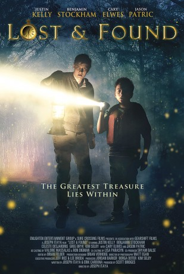

IMDB-Wertung: 5.3 / 10
IMDB-Wertung: 5.3 / 10  Metascore:
Metascore: 
Sent to spend the summer on a remote and mysterious island, teenage brothers embark on a thrilling treasure hunt to restore their family's lost fortune.
Alternativ: Lost & Found
 IMDB-Wertung: 5.3 / 10 Metascore:
Sent to spend the summer on a remote and mysterious island, teenage brothers embark on a thrilling treasure hunt to restore their family's lost fortune.
Jahr: 2016
Dauer: 91 Minuten
FSK: 12
Land: USA Studio: Sony Pictures Home EntertainmentTonspuren: DTS - ,
Untertitel:
Auflösung: 1080p (1920x1080) Größe: 6215 MB
Genre: Abenteuer, Familie, Mystery
Regisseur: Joseph Itaya
Drehbuch: Bin Wang
Soundtrack:
Darsteller:
 Jason Patric als Trent Walton
Jason Patric als Trent Walton Cary Elwes als John Broman
Cary Elwes als John Broman Greg Bryk als Jim Walton
Greg Bryk als Jim Walton Robert B. Kennedy als Ridgewick
Robert B. Kennedy als RidgewickDatei: X:\2016(N-Z)\Schatz von Walton Island, Der (2016, FSK12, 1920x1080).mkv seit 22.03.2017
Festplatte: HD 2016(A-Z)
 Es gibt insgesamt 182 Filme in der Gruppe '2016(N-Z)'
Es gibt insgesamt 182 Filme in der Gruppe '2016(N-Z)'